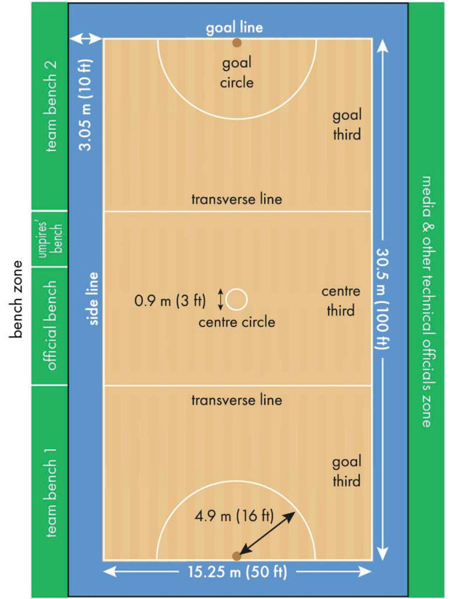

Netball facilities and equipment
Netball basic facilities comprise the court with goal posts and it is either played outdoors or indoors. The equipment varies depending on the level of play, from recreational to professional level. However, netballs, shoes and bibs are basic requirements.
Netball court
Netball is played on a level and firm rectangular court with specific markings to ensure smooth gameplay. The standard netball court measures 30.5 metres in length and 15.25 metres in width and is divided into three sections which are the attacking third, the centre third, and the defensive third. The court features include a centre circle, two goal circles (each with a radius of 4.9 metres), the sidelines and goal lines as shown in Figure 1.1.
